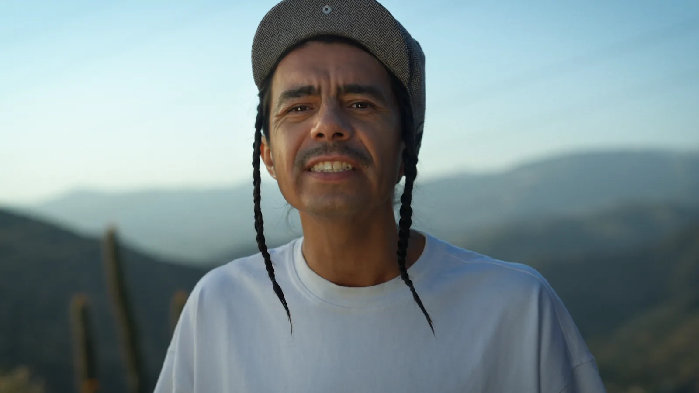
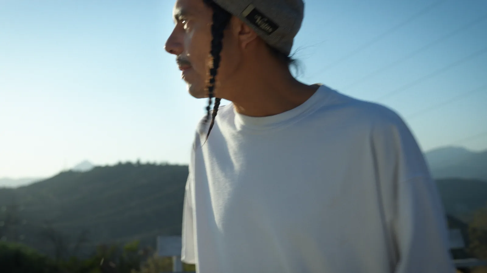
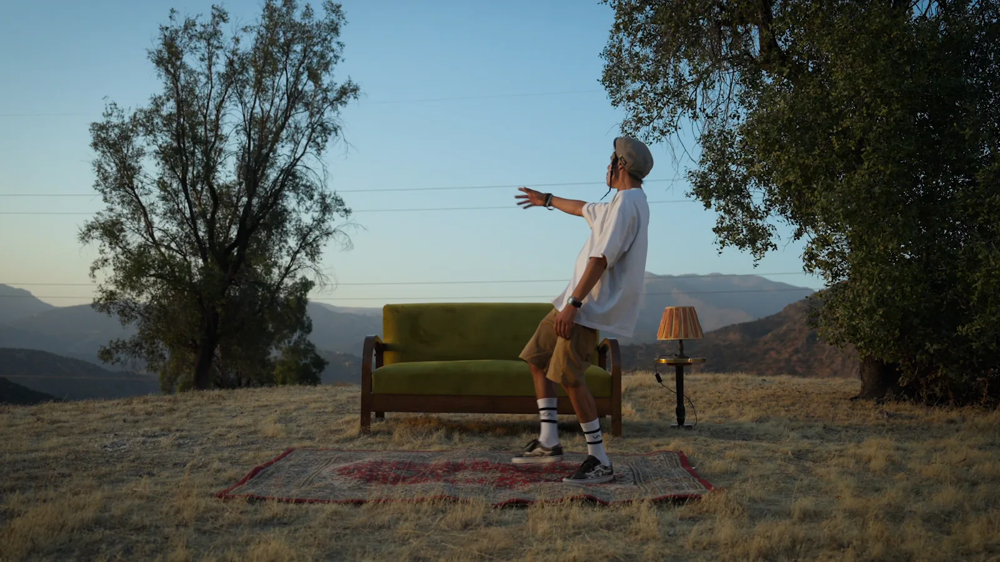
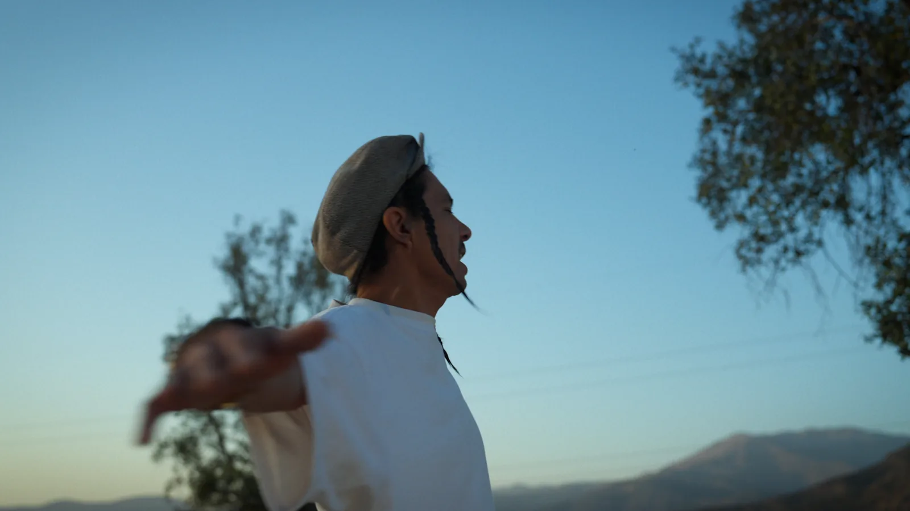
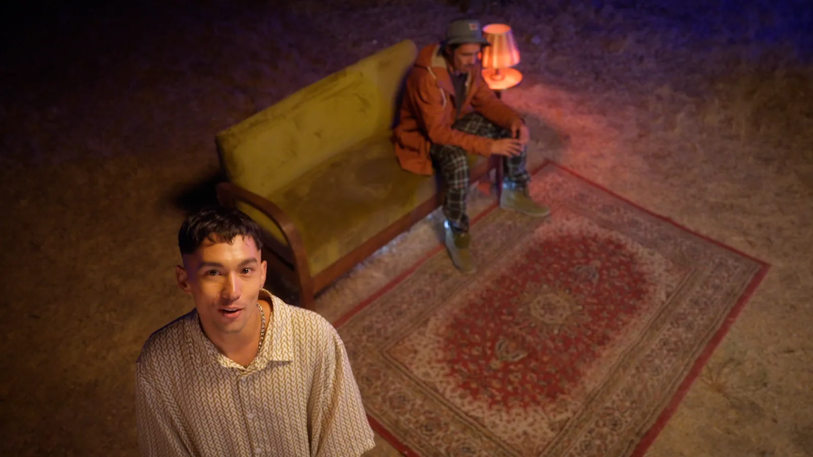
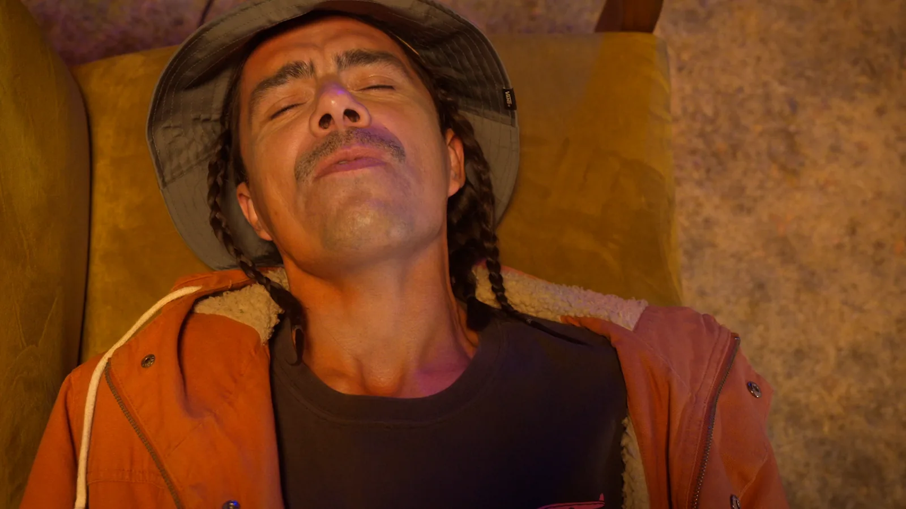
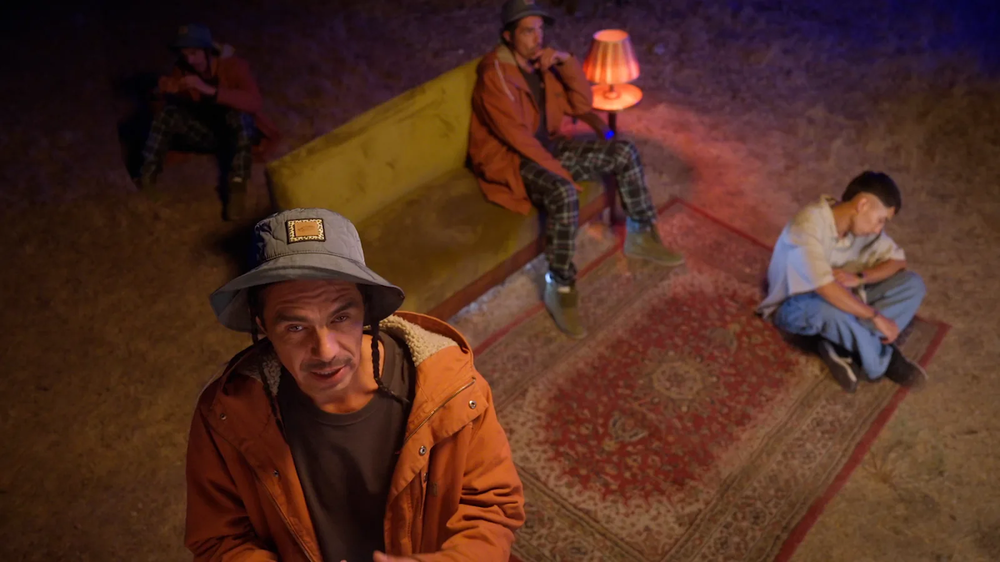
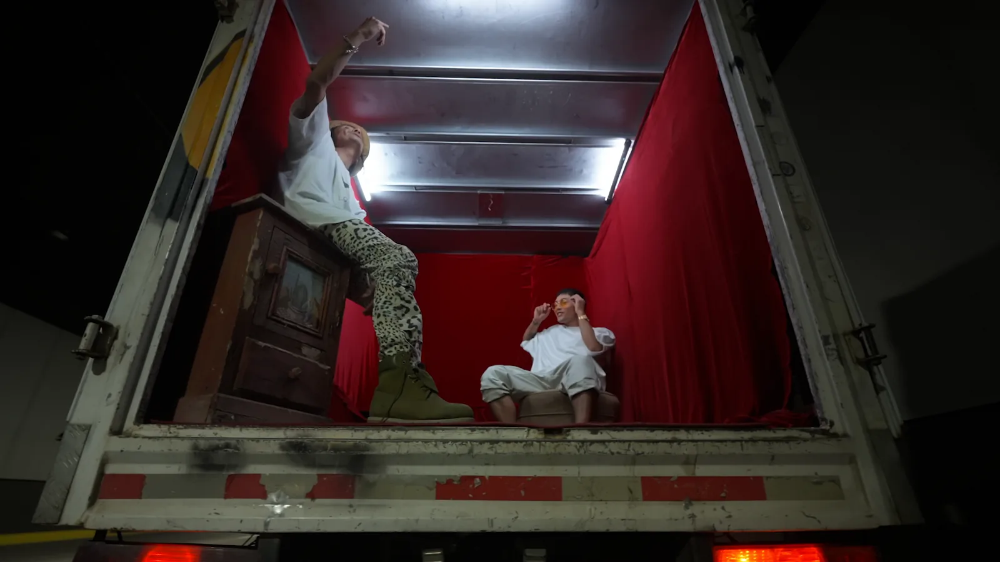

Un videoclip que conecta dos performances y dos paisajes visuales, alternando la luz abierta del exterior con un escenario nocturno de color intenso.
Dirección & Montaje: Marco Hernández.
Productora: HS Studio.
Producción: Occidental.
Dirección de Fotografía: Javier Santibañez.
Color, VFX, Online & Delivery: HS Studio.







